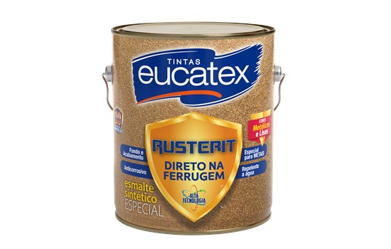

Eco Esmalte Base Água Alto Brilho
📐 Tamanhos disponíveis: 900ml e 3,6LSHERWIN-WILLIAMS ECO ESMALTE é uma tinta esmalte à base d’água que oferece alta cobertura e proteção antimofo. Sua fórmula exclusiva protege contra a degradação por micro-organismos, garantindo durabilidade e resistência. Ideal para aplicação em vimes, madeiras (exceto naval), metais, alumínio, galvanizados e zinco, esta tinta não deixa a cor branca amarelar e proporciona uma secagem rápida entre demãos. Além disso, SHERWIN-WILLIAMS ECO ESMALTE é sem cheiro*, facilitando a limpeza e a reutilização de pincéis e rolos de espuma. Por ser a base de água, reduz drasticamente o tempo de interdição das áreas sob manutenção. Os produtos da linha SHERWIN-WILLIAMS ECO reforçam nosso compromisso com o meio ambiente.
Eco Esmalte Base Água Acetinado
📐 Tamanhos disponíveis: 900ml e 3,6LSHERWIN-WILLIAMS ECO ESMALTE é uma tinta esmalte à base d’água que oferece alta cobertura e proteção antimofo. Sua fórmula exclusiva protege contra a degradação por micro-organismos, garantindo durabilidade e resistência. Ideal para aplicação em vimes, madeiras (exceto naval), metais, alumínio, galvanizados e zinco, esta tinta não deixa a cor branca amarelar e proporciona uma secagem rápida entre demãos. Além disso, SHERWIN-WILLIAMS ECO ESMALTE é sem cheiro*, facilitando a limpeza e a reutilização de pincéis e rolos de espuma. Por ser a base de água, reduz drasticamente o tempo de interdição das áreas sob manutenção. Os produtos da linha SHERWIN-WILLIAMS ECO reforçam nosso compromisso com o meio ambiente.

Esmalte Sintético Tradicional Alto Brilho (Base Solvente)
📐 Tamanhos disponíveis: 900ml e 3,6LSua fórmula inovadora e de altíssima qualidade, proporciona alta cobertura e um ótimo acabamento para superfícies externas e internas de madeiras e metais. Possui máxima proteção e Durabilidade de 10 Anos*.

Eucalux Seca Rápido Alto Brilho (Base Solvente)
📐 Tamanhos disponíveis: 900ml e 3,6LÉ um excelente esmalte sintético base solvente (aguarrás), com secagem super rápida, super rendimento, alta cobertura e acabamento perfeito. Sua fórmula inovadora permite a aplicação entre as demãos em 45 minutes além de grande facilidade para limpeza, pela presença de silicone no produto. Além disso, possui nova tecnologia, onde repinturas sobre superfícies com pintura já existente, como esmalte sintético, esmalte base água e vernizes, podem ser feitas sem prévio lixamento, apenas com uma boa limpeza com Thinner Eucatex 9800.

Eucalux Acqua Base Água Alto Brilho
📐 Tamanhos disponíveis: 900ml e 3,6LEsmalte base água que protege e embeleza as superfícies. Sua fórmula inovadora não amarela, é resistente à ação de intempéries, secagem super rápida e excelente acabamento. Produto não agressivo ao meio ambiente pois não utiliza solvente.

Peg & Pinte Esmalte Sintético Alto Brilho (Base Solvente)
📐 Tamanhos disponíveis: 3,6L e 18LPeg & Pinte Esmalte Sintético na categoria Standard, de alta performance , excelente acabamento e durabilidade. Indicado para pintura em metais ferrosos, madeira, alumínio, galvanizado, PVC e alvenaria. Uso Externo e Interno. Sua fórmula inovadora tem secagem rápida.

Rusterit Direto Na Ferrugem Alto Brilho (Base Solvente)
📐 Tamanhos disponíveis: Apenas 3,6LO Eucatex Rusterit Direto Na Ferrugem é um produto desenvolvido com a mais alta tecnologia, formulado para aplicação diretamente sobre a superfícies metálicas enferrujadas e limpas, com sua fórmula inovadora dispensa o uso prévio de fundo anticorrosivo. Age de forma eficiente prevenindo e interrompendo o processo de oxidação e desenvolvimento da ferrugem . Fácil de aplicar e padrão de acabamento superior.